Below is a collection of art that, if it were up to me, I'd place in a museum of my own, scrapbook-style.
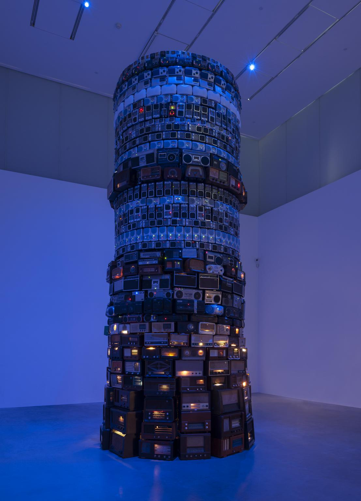
Babel,
Cildo Meireles.
2001
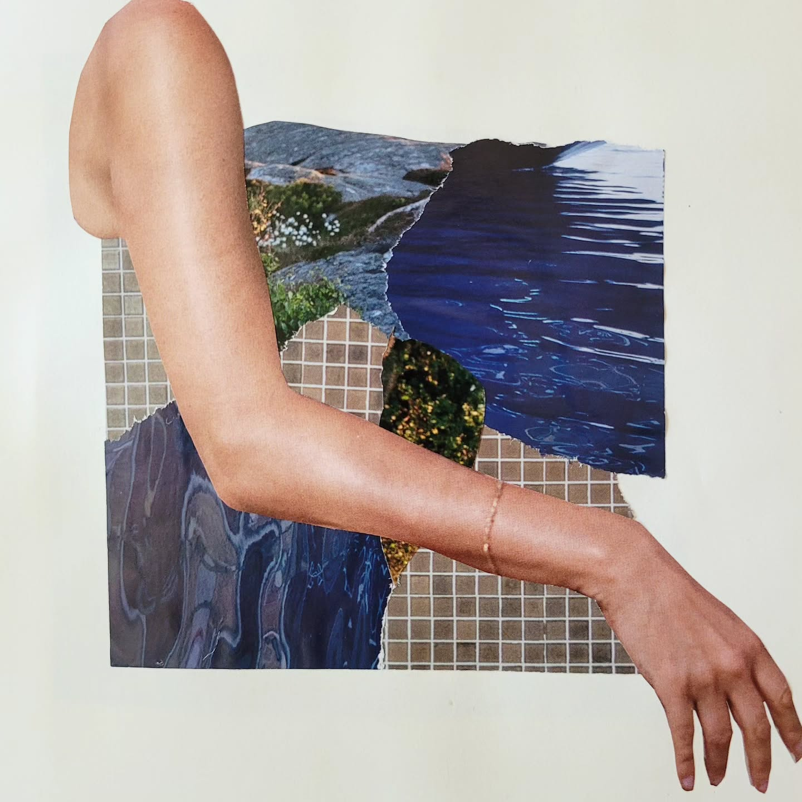
Dangle,
Cat Dossett.
2024
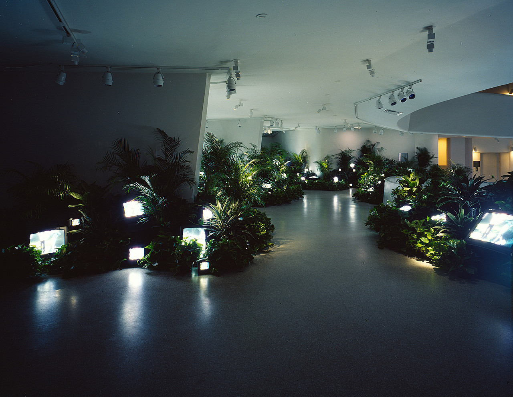
TV Garden,
Nam June Paik.
1974 (2000 version)
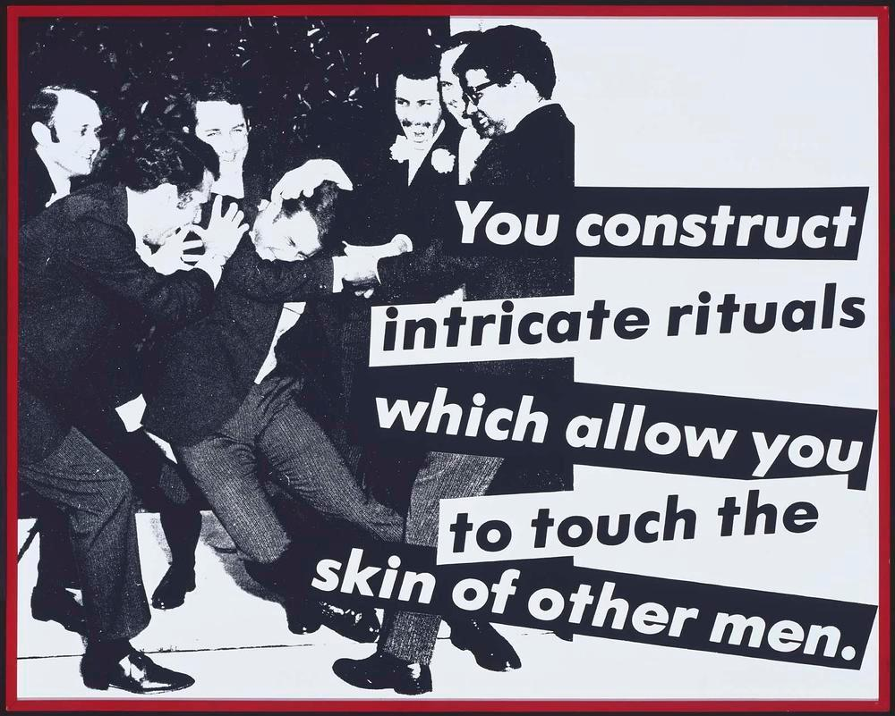
Untitled (You Construct Intricate Rituals),
Barbara Kruger.
1981
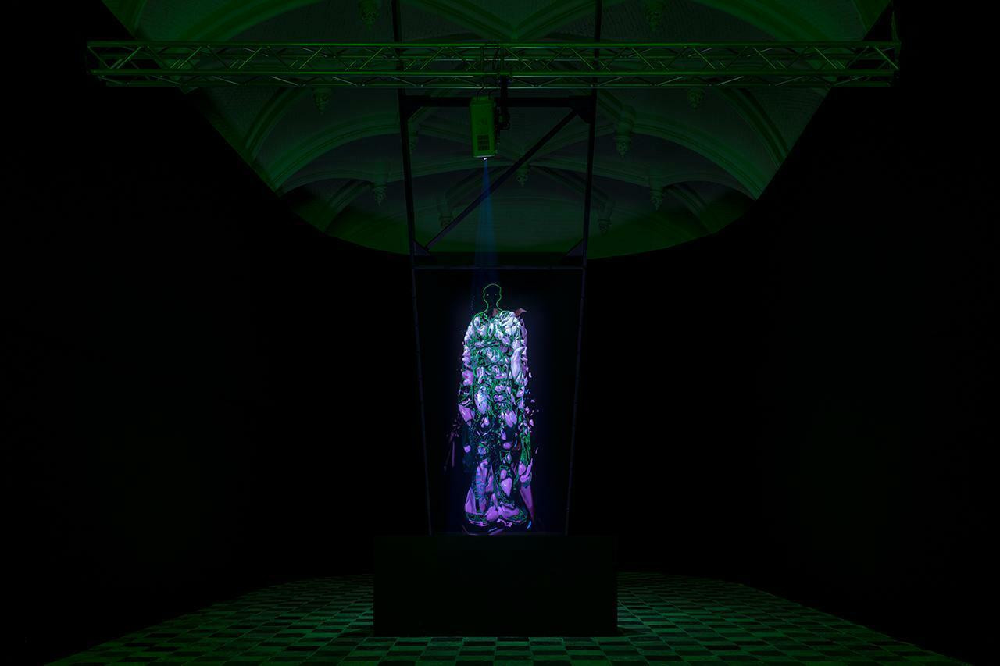
Flo,
Sandra Mujinga.
2019
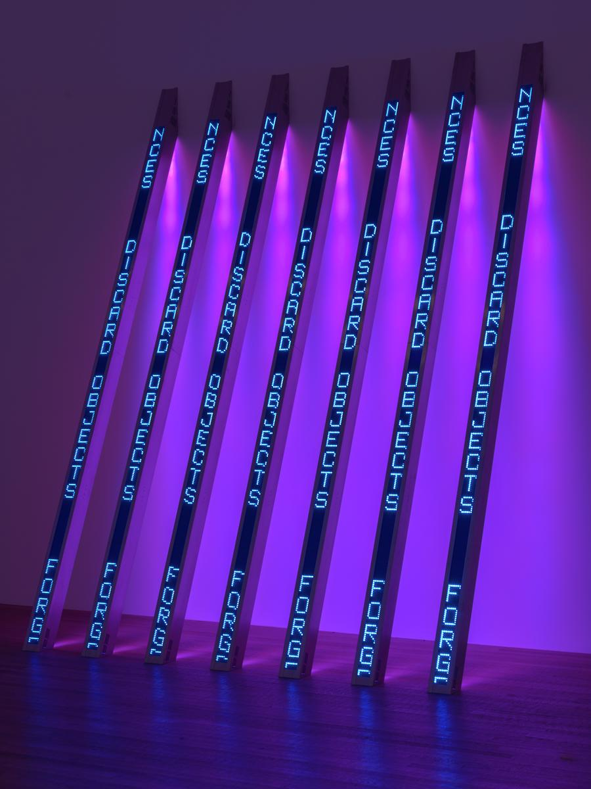
Blue Purple Tilt,
Jenny Holzer.
2007
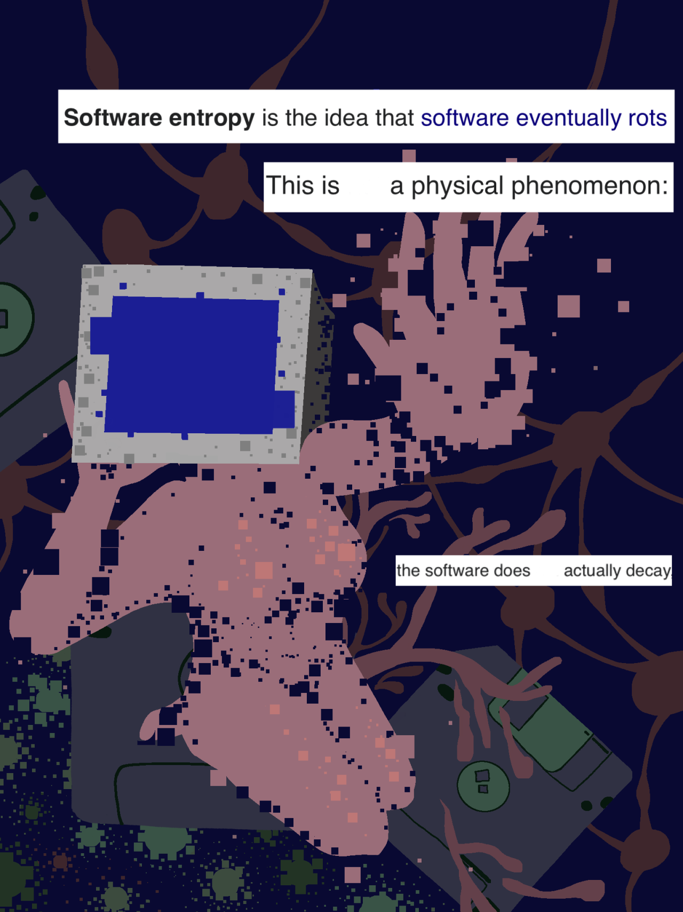
a wikipedia poem on software entropy,
lipwig.
2024
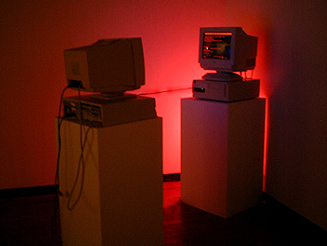
The Lovers,
Sneha Solanki.
2001
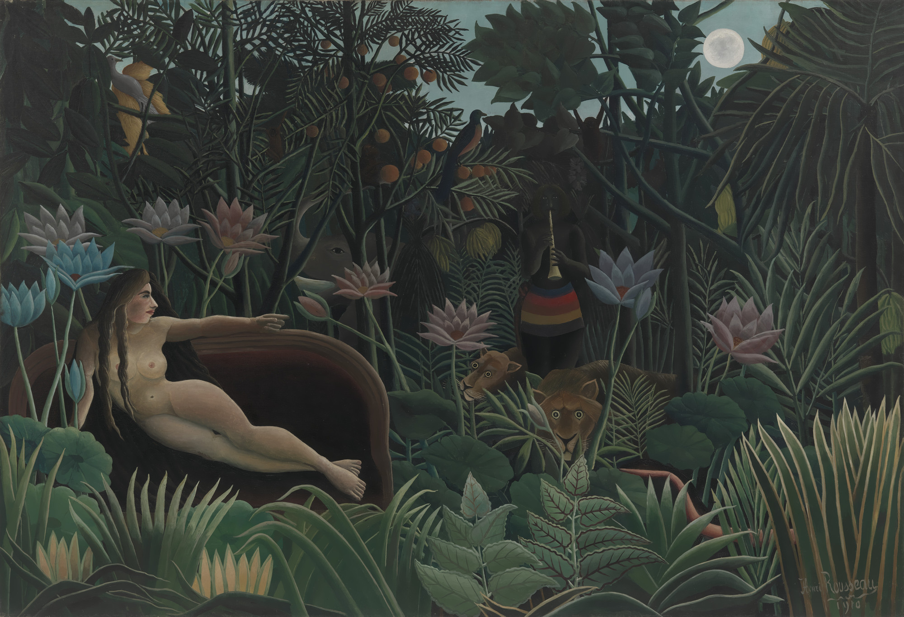
The Dream,
Henri Rousseau.
1910
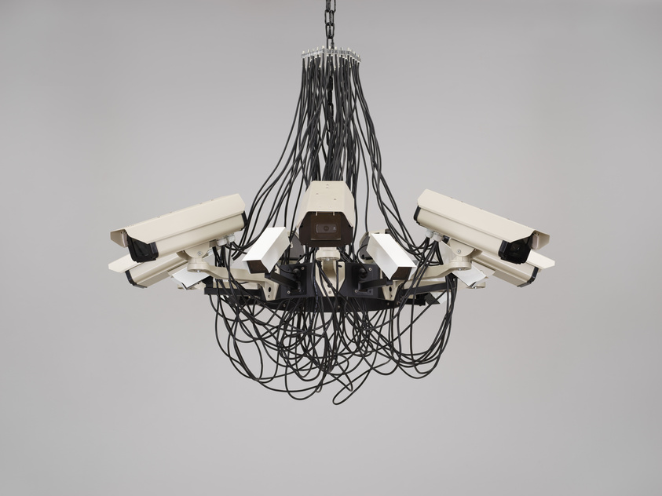
Asymmetric Love Number 2,
Addie Wagenknecht.
2013
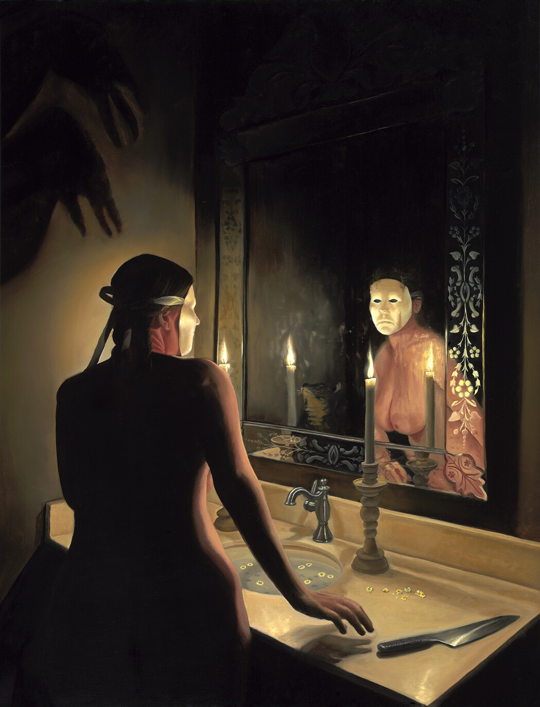
they make us what we were not,
Jamie Luoto.
2023